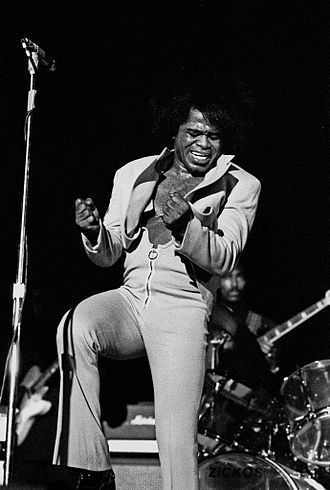

Fan Blog James Brown.
James Joseph Brown (May 3, 1933 – December 25, 2006) was an American
singer, songwriter, dancer, musician, record producer, and
bandleader. The central progenitor of funk music and a major figure
of 20th-century music, he is often referred to by the honorific
nicknames "Godfather of Soul", "Mr. Dynamite", and "Soul Brother No.
1". In a career that lasted over 50 years, he influenced the
development of several music genres.
.jfif)
I am a huge fan of James Brown. I like the way he moved, sang and
brought us joy. Still today, i love his music!
It is a man's man's man's word, but it would be nothing,
nothingggg!, without a woman or a girl.
.jfif)
He is a Legend! The star of the show!
.jfif)
The Best CD! Track listing Side one "It's a New Day" (Brown) – 6:15
"Funky Drummer" (Brown) – 9:13 Side two "Give It Up or Turnit a
Loose (Remix)" (Charles Bobbit) – 6:09 "I Got to Move" (previously
unreleased) (Brown) – 7:12 "Funky Drummer (Bonus Beat Reprise)"
(Brown) – 2:54 Side three "Talkin' Loud and Sayin' Nothing (Remix)"
(Brown, Bobby Byrd) – 7:40 "Get Up, Get into It, Get Involved
(Mono)" (Brown, Byrd, Ron Lenhoff) – 7:05 Side four "Soul Power
(Re-edit) (Mono)" (Brown) - 8:07 "Hot Pants (She Got to Use What She
Got to Get What She Wants)" (Brown) – 8:42 2003 reissue bonus track
10. "Blind Man Can See It (Extended)" (Brown) - 7:19